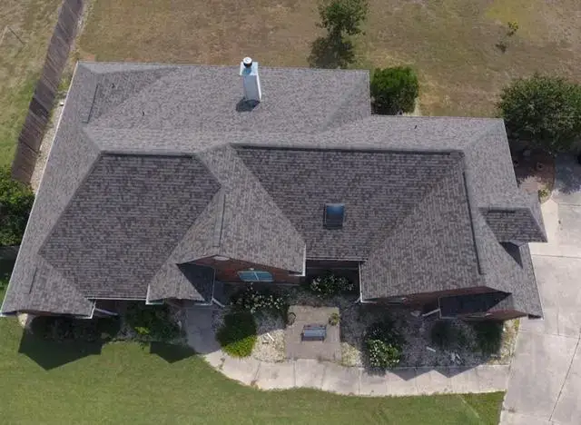
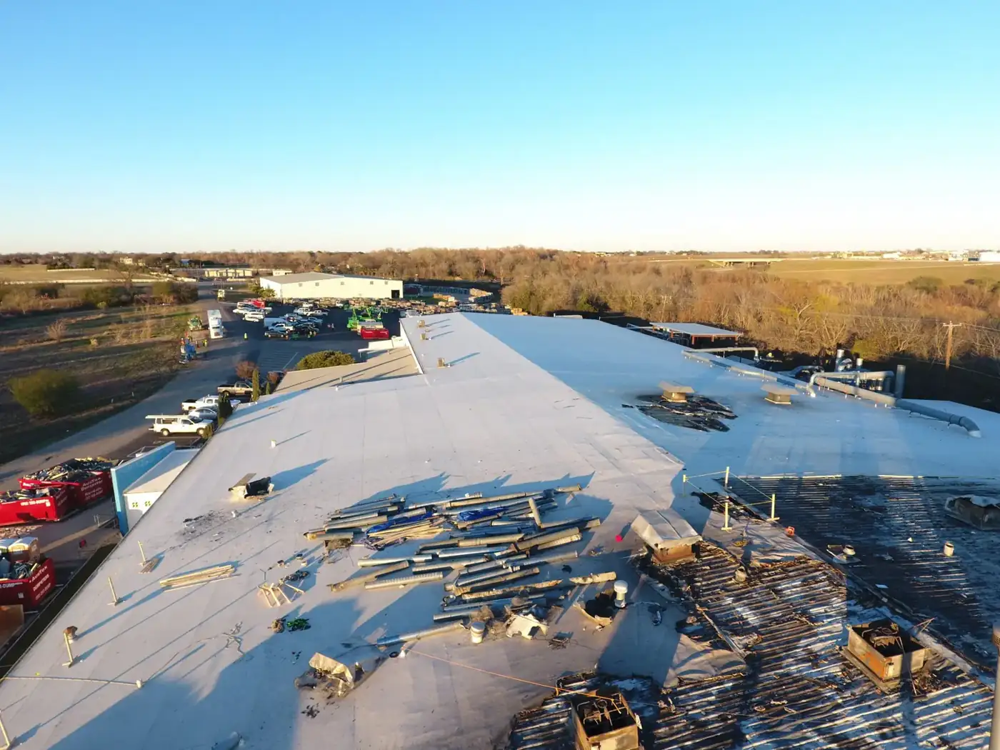
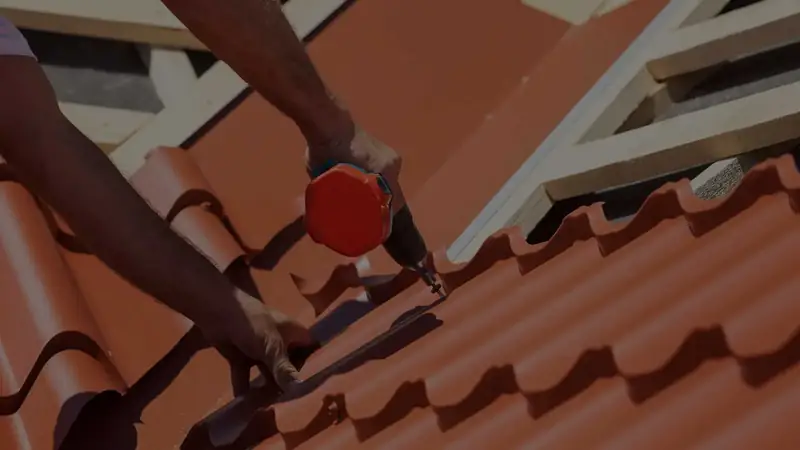
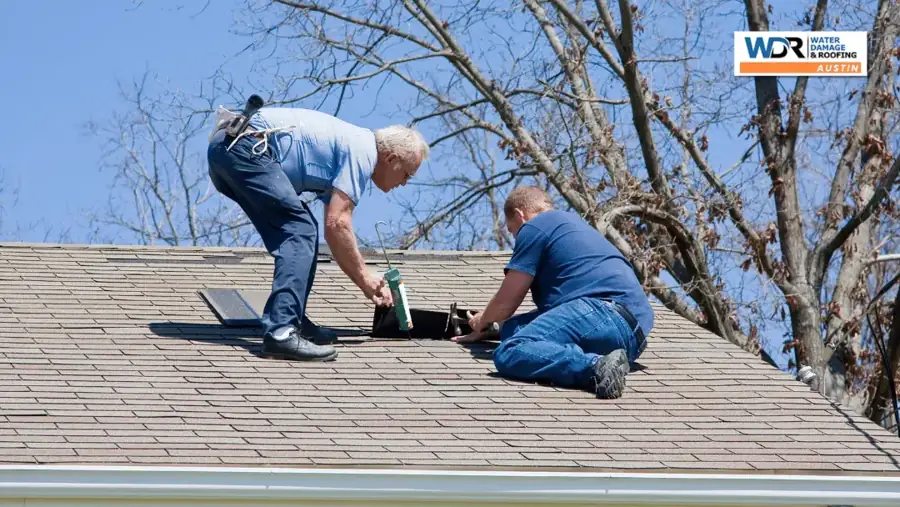
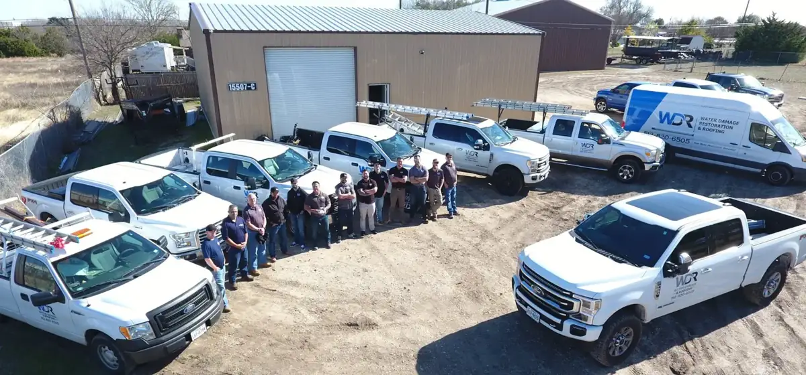
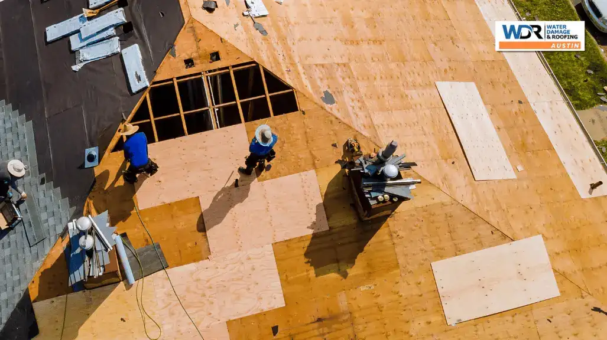

Roof inspection
Don't let hidden damage hurt your home. Our team gives your roof a thorough professional inspection so you know it's in the best possible condition.
Book a free inspection →
GAF Master Elite Contractor with a BBB A+ rating. Fully insured, with our own W-2 crews, never subcontractors. More than 1,510 five-star reviews for roof repair, replacement, inspections, hail damage and water damage restoration.
Homeowners and commercial properties across Central Texas trust us with inspections, repairs and full replacements, and we work with all major insurance companies on hail, storm and leak claims.

Don't let hidden damage hurt your home. Our team gives your roof a thorough professional inspection so you know it's in the best possible condition.
Book a free inspection →
Your roof protects your biggest investment. We work with only the best materials and have the skill and training to install asphalt shingle, tile or flat roofs.
Get a written estimate →
Leaks, gutter problems, missing shingles or repainting, we fix it so your roof withstands hot Austin summers and the thunderstorms that follow.
Fix my roof →Fully insured W-2 crews, up-to-date gear and a process built around honest assessments. Press play to see how we work on Austin roofs.

We check flashing, look for leaks, inspect surfaces for rot or mold, review the roof structure, shingle condition and gutters. Plan one every spring and fall.
You get a detailed estimate of costs. If wind or hail caused the damage, we work with your insurance company to see whether your replacement qualifies.
Our crew arrives with up-to-date gear to do the job right, using only the best materials, then leaves your property clean.
We remove the water and moisture from the property and dry it completely, which can take several weeks depending on the damage. It's the step that saves you money in the long run.
Then we clean everything showing signs of mold with products that kill, disinfect and sanitize, and use high-quality air scrubbers so nothing lingers in your air. Depending on the damage, restoration can be as simple as replacing insulation and drywall.

“Brad responded immediately and came out and diagnosed my issue and offered a quick resolution. Impressed with the honesty and integrity of the business. Will reach out to them again with any roof issue.”
Steve A.Google review“Prompt response from the team, and Dan did a thorough inspection and fixed our roof damage quickly, all at a very reasonable price. Honest, efficient, and professional from start to finish.”
Qiqi L.Google review“Dan is honest, hardworking, trustworthy, and just an all-around good person. Any company that has Dan representing them is in good hands, and I'd confidently recommend him to anyone!”
Grace O.Google reviewWe proudly serve Williamson and Travis County, from Abercrombie to West Lake Hills.
Neighborhoods: Hornsby Bend, Daffan, Pilot Knob, Bluff Springs, San Leanna, Shady Hollow, Bear Creek, Cedar Valley, Hudson Bend, McNeil, Jollyville, Wells Branch, River Ranch.
Call now for a free roof inspection. We're available 24/7.